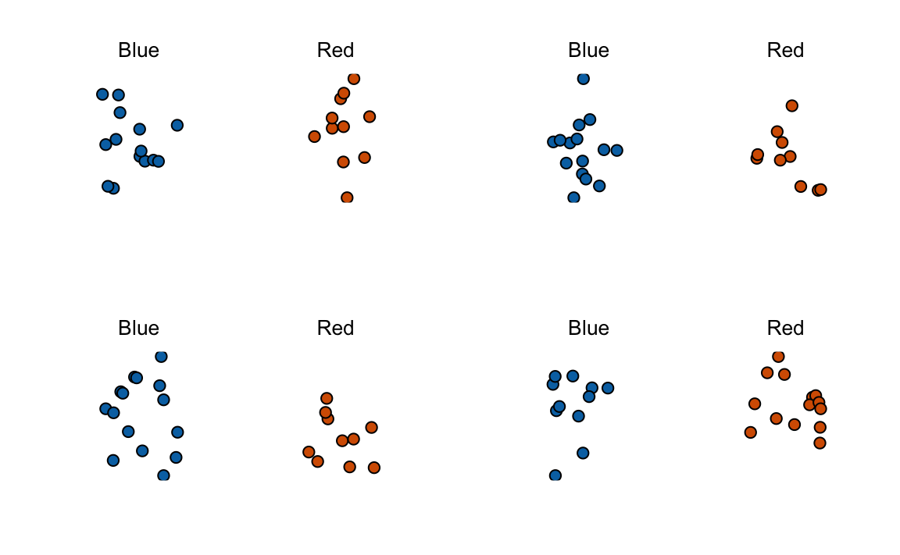
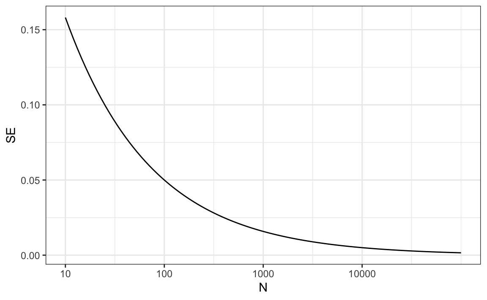
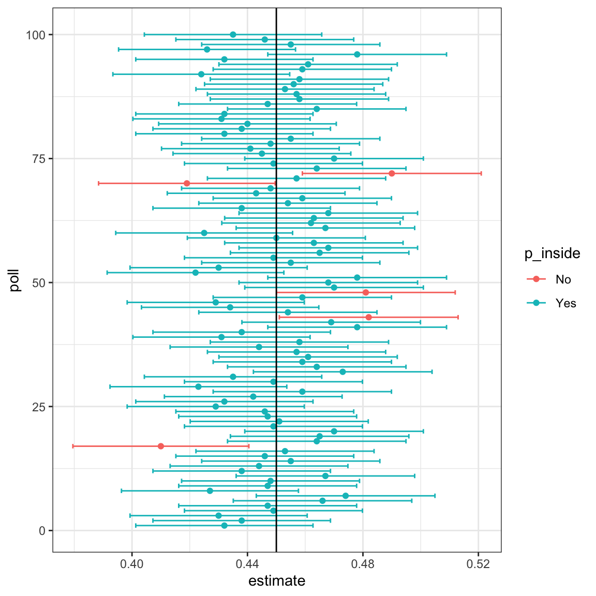

| Poll | Date | Sample | MoE | Clinton | Trump | Spread |
|---|---|---|---|---|---|---|
| RCP Average | 10/31 - 11/7 | -- | -- | 47.2 | 44.3 | Clinton +2.9 |
| Bloomberg | 11/4 - 11/6 | 799 LV | 3.5 | 46.0 | 43.0 | Clinton +3 |
| Economist | 11/4 - 11/7 | 3669 LV | -- | 49.0 | 45.0 | Clinton +4 |
| IBD | 11/3 - 11/6 | 1026 LV | 3.1 | 43.0 | 42.0 | Clinton +1 |
| ABC | 11/3 - 11/6 | 2220 LV | 2.5 | 49.0 | 46.0 | Clinton +3 |
| FOX News | 11/3 - 11/6 | 1295 LV | 2.5 | 48.0 | 44.0 | Clinton +4 |
| Monmouth | 11/3 - 11/6 | 748 LV | 3.6 | 50.0 | 44.0 | Clinton +6 |
| CBS News | 11/2 - 11/6 | 1426 LV | 3.0 | 47.0 | 43.0 | Clinton +4 |
| LA Times | 10/31 - 11/6 | 2935 LV | 4.5 | 43.0 | 48.0 | Trump +5 |
| NBC News | 11/3 - 11/5 | 1282 LV | 2.7 | 48.0 | 43.0 | Clinton +5 |
| NBC News | 10/31 - 11/6 | 30145 LV | 1.0 | 51.0 | 44.0 | Clinton +7 |
| McClatchy | 11/1 - 11/3 | 940 LV | 3.2 | 46.0 | 44.0 | Clinton +2 |
| Reuters | 10/31 - 11/4 | 2244 LV | 2.2 | 44.0 | 40.0 | Clinton +4 |
| GravisGravis | 10/31 - 10/31 | 5360 RV | 1.3 | 50.0 | 50.0 | Tie |
9 Estimates and Confidence Intervals
Opinion polling has been conducted since the 19th century. The general aim is to describe the opinions held by a specific population on a given set of topics. In recent times, these polls have become especially common in the United States during presidential elections. Polls are useful when interviewing every member of a population is logistically impossible. The general strategy involves interviewing a smaller, randomly chosen group and then inferring the opinions of the entire population from those of this subset.
Statistical theory, known as inference, provides the framework that justifies this process. In this part of the book, we describe the foundations of statistical inference and show how they are applied in opinion polling. In particular, we explain how pollsters use confidence intervals and the margin of error to quantify the uncertainty in their estimates and to report results that reflect the limits of what the data can reveal.
Perhaps the best-known opinion polls are those conducted to determine which candidate is preferred by voters in a given election. Political strategists extensively use such polls to decide where to allocate resources, such as determining which regions to target in their efforts to mobilize voters.
Elections are especially interesting examples of opinion polls because the true opinions of the entire population are revealed on election day. Of course, it costs millions of dollars to conduct a real election, which makes polling a cost-effective alternative for those seeking to forecast results. News organizations are also deeply invested in these forecasts, given the public’s appetite for early insights into election outcomes.
9.1 The sampling model for polls
We start by connecting probability theory to the task of using polls to learn about a population.
Although typically the results of polls run by political candidates are kept private, polls are also conducted by news organizations because results tend to be of interest to the general public and made public. We will eventually be looking at these public datasets.
Real Clear Politics1 is an example of a news aggregator that organizes and publishes poll results. For example, they present the following poll results, reporting estimates of the popular vote for the 2016 presidential election2:
Let’s make some observations about the table above. First, observe that different polls, all conducted days before the election, report different spreads: the estimated difference between support for the two candidates. Notice that the reported spreads hover around what eventually became the actual result: Clinton won the popular vote by 2.1%. Additionally, we see a column titled MoE which stands for margin of error. We will learn what this means.
A Motivating Example: The Polling Competition
To help us understand the connection between polls and what we have learned, let’s construct a situation similar to what pollsters face. To simulate the challenge pollsters encounter in terms of competing with other pollsters for media attention, we will use an urn filled with beads to represent voters, and pretend we are competing for a $25 dollar prize. The challenge is to guess the spread between the proportion of blue and red beads in this urn (in this case, a pickle jar):

Before making a prediction, you can take a sample (with replacement) from the urn. To reflect the fact that running polls is expensive, it costs you $0.10 for each bead you sample. Therefore, if your sample size is 250, and you win, you will break even since you would have paid $25 to collect your $25 prize. Your entry into the competition can be an interval. If the interval you submit contains the true proportion, you receive half what you paid and proceed to the second phase of the competition. In the second phase, the entry with the smallest interval is selected as the winner.
The dslabs package includes a function that shows a random draw from this urn:
Think about how you would construct your interval based on the data shown above.
We have just described a simple sampling model for opinion polls. In this model, the beads inside the urn represent individuals who will vote on election day. The red beads represent those voting for the Republican candidate, while the blue beads represent the Democrats. For simplicity, let’s assume there are no other colors; that is, that there are just two parties: Republican and Democratic.
9.2 Populations, samples, parameters, and estimates
We want to predict the proportion of blue beads in the urn. Let’s call this quantity \(p\), which then tells us the proportion of red beads \(1-p\), and the spread \(p - (1-p)\), which simplifies to \(2p - 1\).
In statistical textbooks, the beads in the urn are called the population. The proportion of blue beads in the population \(p\) is called a parameter. The 25 beads we see in the previous plot are called a sample. The goal of statistical inference is to predict the parameter \(p\) based on the observed data in the sample.
Can we do this with the 25 observations above? It is certainly informative. For example, given that we see 13 red and 12 blue beads, it seems unlikely that \(p\) > .9 or \(p\) < .1. But are we ready to predict with certainty that there are more red beads than blue in the jar?
We want to construct an estimate of \(p\) using only the information we observe. An estimate should be thought of as a summary of the observed data that we think is informative about the parameter of interest. It seems intuitive to think that the proportion of blue beads in the sample \(0.48\) must be at least related to the actual proportion \(p\). But do we simply predict \(p\) to be 0.48? First, remember that the sample proportion is a random variable. If we run the command take_poll(25) four times, we get a different answer each time, since the sample proportion is a random variable.

Observe that in the four random samples shown above, the sample proportions range from 0.44 to 0.60. By describing the distribution of this random variable, we will be able to gain insights into how good this estimate is and how we can improve it.
The sample average as an estimate
Conducting an opinion poll is being modeled as taking a random sample from an urn. We propose using the proportion of blue beads in our sample as an estimate of the parameter \(p\). Once we have this estimate, we can easily report an estimate for the spread \(2p-1\). However, for simplicity, we will illustrate the concepts for estimating \(p\). We will use our knowledge of probability to justify our use of the sample proportion and to quantify its proximity to the population proportion \(p\).
We start by defining the random variable \(X\) as \(X=1\), if we pick a blue bead at random, and \(X=0\) if it is red. This implies that the population is a list of 0s and 1s. If we sample \(N\) beads, then the average of the draws \(X_1, \dots, X_N\) is equivalent to the proportion of blue beads in our sample. This is because adding the \(X\)s is equivalent to counting the blue beads, and dividing this count by the total \(N\) is equivalent to computing a proportion. We use the symbol \(\bar{X}\) to represent this average. In statistics textbooks, a bar on top of a symbol typically denotes the average.
The theory we just covered about the sum of draws becomes useful because the average is a sum of draws multiplied by the constant \(1/N\):
\[ \bar{X} = \frac{1}{N} \sum_{i=1}^N X_i \]
For simplicity, let’s assume that the draws are independent; after we see each sampled bead, we return it to the urn. In this case, what do we know about the distribution of the sum of draws? First, we know that the expected value of the sum of draws is \(N\) times the average of the values in the urn. We know that the average of the 0s and 1s in the urn must be \(p\), the proportion of blue beads.
Here, we encounter an important difference compared to what we did in the probability part of the book: we don’t know the composition of the urn. While we know there are blue and red beads, we don’t know how many of each. This is what we want to find out: we are trying to estimate \(p\).
Parameters
Just as we use variables to define unknowns in systems of equations, in statistical inference, we define parameters to represent unknown parts of our models. In the urn model, which we are using to simulate an opinion poll, we do not know the proportion of blue beads in the urn. We define the parameters \(p\) to represent this quantity. Since our main goal is determining \(p\), we are going to estimate this parameter.
The concepts presented here on how we estimate parameters, and provide insights into how good these estimates are, extend to many data analysis tasks. For example, we may want to determine the difference in health improvement between patients receiving treatment and a control group, investigate the health effects of smoking on a population, analyze the differences in racial groups of fatal shootings by police, or assess the rate of change in life expectancy in the US during the last 10 years. All these questions can be framed as a task of estimating a parameter from a sample.
Introductory statistics textbooks typically begin by introducing the population average as the first example of a parameter. In our case, the parameter of interest \(p\) is defined as the proportion of 1s (blue) in the urn. Notice that this proportion is also equal to the average of all the numbers in the urn, since the 1s and 0s can be treated as numeric values.
This means that our parameter \(p\) can be interpreted as a population average. For this reason, we will use \(\bar{X}\) to denote its estimate, the average computed from a sample of draws from the urn. Although many textbooks use the notation \(\hat{p}\) for this estimate, the symbol \(\bar{X}\) better emphasizes the connection between sample averages and population means, a concept that extends naturally to situations beyond binary data.
9.3 Estimate properties: expected value and standard error
To understand how good our estimate is, we will describe the statistical properties of the random variable defined above: the sample proportion \(\bar{X}\). Remember that \(\bar{X}\) is the sum of independent draws divided by a non-random constant so the rules we covered Section 7.4 apply.
Applying the concepts we have learned we can show that:
\[ \mathrm{E}[\bar{X}] = p \]
We can also use what we learned to determine the standard error: \[ \mathrm{SE}[\bar{X}] = \sqrt{p(1-p)/N} \]
This result reveals the power of polls. The expected value of the sample proportion \(\bar{X}\) is the parameter of interest \(p\), and we can make the standard error as small as we want by increasing \(N\). The law of large numbers tells us that with a large enough sample, our estimate converges to \(p\).
If we take a large enough sample to make our standard error about 1%, we will be quite certain about who will win. But how large does the poll have to be for the standard error to be this small?
One problem is that we do not know \(p\), so we can’t actually compute the standard error. However, for illustrative purposes, let’s assume that \(p=0.51\) and make a plot of the standard error versus the sample size \(N\):

The plot shows that we would need a poll of over 10,000 people to achieve a standard error that low. We rarely see polls of this size due in part to the associated costs. According to the Real Clear Politics table, sample sizes in opinion polls range from 500-3,500 people. For a sample size of 1,000 and \(p=0.51\), the standard error is:
or 1.5 percentage points. So even with large polls, for close elections, \(\bar{X}\) can lead us astray if we don’t realize it is a random variable. Nonetheless, we can actually say more about how close we get to \(p\) and we do that in Section 9.4.1.
Polling versus forecasting
Before we continue, it’s important to clarify a practical issue related to forecasting an election. If a poll is conducted four months before the election, it is estimating the \(p\) for that moment, and not for election day. The \(p\) for election night might be different, as people’s opinions tend to fluctuate through time. Generally, the polls conducted the night before the election tend to be the most accurate, since opinions do not change significantly in a day. However, forecasters try to develop tools that model how opinions vary over time and aim to predict the election night results by taking into consideration these fluctuations. We will explore some approaches for doing this in Chapter 12.
9.4 Confidence Intervals
Pollsters summarize uncertainty using a single, easy-to-interpret number called the margin of error. The margin of error, together with the estimate of the parameter, defines an interval that they are confident contains the true value. But what does confident actually mean?
To connect this idea to a familiar challenge, recall the competition described in Section 9.1, where you were asked to report an interval for the true proportion \(p\). If your interval included the actual \(p\), you recovered half the cost of your poll and advanced to the next round. A guaranteed way to move on would be to report a very wide interval, say \([0,1]\), which is certain to contain \(p\). But such an interval is useless because it conveys no information, and you would lose to someone submitting a narrower one. Similarly, an election forecaster who predicts that the spread will be between −100% and 100% would not be taken seriously. Even an interval between −10% and 10% would be too vague to be meaningful.
On the other hand, a very narrow interval is risky. A pollster who reports extremely tight intervals but frequently misses the true value will quickly lose credibility. The goal is to find a balance: intervals that are narrow enough to be informative but wide enough to be reliable.
Statistical theory provides a way to quantify precisely what we mean by confidence, using the probability framework developed earlier. Specifically, we can construct intervals for which we can compute the probability of containing the true parameter \(p\). When a pollster reports an estimate along with a margin of error, they are effectively reporting an interval with a 95% probability of containing the true parameter, known as a 95% confidence interval.
The Central Limit Theorem
In Chapter 9, we introduced the sample average \(\bar{X}\) as an estimate of the parameter \(p\), and we showed how to compute its standard error. However, to calculate probabilities, we need the distribution of \(\bar{X}\).
In the Probability part of the book (Section 8.3), we learned that when the sample size is large, the average of independent draws from a population is approximately normally distributed, regardless of the shape of the population. This is the Central Limit Theorem (CLT). Because \(\bar{X}\) is the average of independent draws, the CLT applies directly here, and it is the main tool used to construct confidence intervals.
Let’s use it to answer a concrete question:
How likely is it that our sample estimate \(\bar{X}\) is within 2% of the true population proportion \(p\)?
We can express this as:
\[ \Pr(|\bar{X} - p| \leq 0.02) = \Pr(\bar{X} \leq p + 0.02) - \Pr(\bar{X} \leq p - 0.02). \]
If we standardize \(\bar{X}\), subtracting its expected value and dividing by its standard error, we obtain a standard normal random variable \(Z\):
\[ Z = \frac{\bar{X} - \mathrm{E}[\bar{X}]}{\mathrm{SE}[\bar{X}]}. \]
Since \(\mathrm{E}[\bar{X}] = p\) and \(\mathrm{SE}[\bar{X}] = \sqrt{p(1-p)/N}\), the probability above becomes:
\[ \Pr\left(Z \leq \frac{0.02}{\sqrt{p(1-p)/N}}\right) - \Pr\left(Z \leq -\frac{0.02}{\sqrt{p(1-p)/N}}\right). \]
To compute this, we need \(\sqrt{p(1-p)/N}\), but \(p\) is unknown. Fortunately, the CLT still holds if we use a plug-in estimate, replacing \(p\) with our observed \(\bar{X}\):
\[ \widehat{\mathrm{SE}}[\bar{X}] = \sqrt{\bar{X}(1 - \bar{X})/N}. \]
In statistics, hats indicate estimates. For example, \(\hat{p}\) is often used instead of \(\bar{X}\) to denote the estimate of \(p\). Similarly, \(\widehat{\mathrm{SE}}\) means we are estimating the standard error rather than computing it exactly.
Using our earlier poll with \(\bar{X} = 0.48\) and \(N = 25\), we obtain:
x_hat <- 0.48
se <- sqrt(x_hat*(1 - x_hat)/25)
se
#> [1] 0.0999Now we can compute the probability that our estimate is within 2% of the true value:
There is only a small chance of being this close when \(N = 25\).
The same reasoning applies for any desired error. To find the error \(\epsilon\) that gives a 95% probability that \(\bar{X}\) is within that range of \(p\), we solve:
\[ \Pr(|\bar{X} - p| \leq \epsilon) = 0.95. \]
From the standard normal distribution, we know that
\[ \Pr(-1.96 \leq Z \leq 1.96) = 0.95. \]
Therefore, \(\epsilon = 1.96 \times \widehat{\mathrm{SE}}[\bar{X}]\).
This result gives us a way to construct confidence intervals that, in repeated samples, contain the true parameter 95% of the time.
Constructing Confidence Intervals
Using this result, we can write the 95% confidence interval for \(p\) as:
\[ \left[\bar{X} - 1.96,\widehat{\mathrm{SE}}[\bar{X}], , \bar{X} + 1.96,\widehat{\mathrm{SE}}[\bar{X}]\right]. \]
The endpoints of this interval are not fixed numbers—they depend on the data. Each time we take a new sample, we obtain a new \(\bar{X}\) and therefore a new confidence interval. To see this, we can repeat the sampling process using the same parameters as before:
If you run this code several times, you’ll see that the interval changes from run to run due to random sampling variation.
The definition of a 95% confidence interval is that, over many repetitions of this process, about 95% of the intervals constructed in this way will contain the true value of \(p\). Mathematically:
\[ \Pr\left(p \in \left[\bar{X} - 1.96 ,\widehat{\mathrm{SE}}[\bar{X}], \bar{X} + 1.96,\widehat{\mathrm{SE}}[\bar{X}]\right]\right) = 0.95. \]
Confidence intervals are not unique. We can construct other intervals that also have 95 percent coverage for \(p\). For example, approaches that avoid going past 0 or 1 when \(\bar{X}\) is close to 0 or 1.
The 95 percent confidence interval we derived is symmetric around \(\bar{X}\) and, under standard assumptions, is the shortest interval for which the probability of containing \(p\) is 95 percent. For a discussion of alternative intervals and their properties, see the recommended reading section.
If we want a different confidence level, say 99%, we adjust the multiplier. The value \(z\) is determined by
\[ \Pr(-z \leq Z \leq z) = 1 - \alpha, \]
which in R can be computed as:
alpha <- 0.01
z <- qnorm(1 - alpha/2)For example, qnorm(0.975) gives 1.96 for a 95% confidence interval, and qnorm(0.995) gives 2.58 for a 99% interval.
A Monte Carlo Simulation
We can verify that the intervals we construct have the desired probability of including \(p\) using a Monte Carlo simulation. By repeatedly drawing samples and constructing confidence intervals, we can check how often the intervals actually contain the true value of \(p\).
As expected, the interval covers \(p\) about 95% of the time.
The plot below shows the first 100 simulated confidence intervals. Each horizontal line represents one interval, and the black vertical line marks the true proportion \(p\). Roughly 95% of the intervals overlap the line, while about 5% miss it, exactly as predicted.

When applying this theory, remember that the intervals are random, not \(p\). The confidence level refers to the procedure, not to a probability about \(p\) itself.
Margin of Error
Margins of error are closely related to confidence intervals. The connection is simple: the margin of error is the amount added to and subtracted from the estimate to form a confidence interval.
For polls, the margin of error is given by
\[ z \times \sqrt{\bar{X}(1-\bar{X}) / N}. \]
For a 95 percent confidence interval, this corresponds to using \(z = 1.96\). Increasing the confidence level or decreasing the sample size both make the margin of error larger, while larger samples produce smaller margins of error.
In practice, pollsters almost always report 95 percent confidence intervals. Unless otherwise stated, you should assume that the reported margin of error is based on this level of confidence. Results are typically presented as “estimate ± margin of error.” For example, if \(\bar{X} = 0.52\) with a margin of error of \(0.03\), the result would be reported as “52% ± 3%”
Why Not Just Run a Huge Poll?
If we surveyed 100,000 people, the margin of error would shrink to less than 0.3%. In principle, we can make the margin of error as small as we want by increasing \(N\).
In practice, however, polling is limited not only by cost but also by bias. Real-world polls are rarely simple random samples. Some people do not respond, others misreport their preferences, and defining the population (for example, registered voters versus likely voters) is not straightforward.
These imperfections introduce systematic errors that the margin of error does not capture. Historically, U.S. popular-vote polls have shown biases of about 2–3%. Understanding and modeling these biases is an essential part of modern election forecasting, a topic we return to in Chapter 10.
9.5 Exercises
1. Suppose you poll a population in which a proportion \(p\) of voters are Democrats and \(1-p\) are Republicans. Your sample size is \(N=25\). Consider the random variable \(S\), which is the total number of Democrats in your sample. What is the expected value of this random variable? Hint: It’s a function of \(p\).
2. What is the standard error of \(S\) ? Hint: It’s a function of \(p\).
3. Consider the random variable \(S/N\). This is equivalent to the sample average, which we have been denoting as \(\bar{X}\). What is the expected value of the \(\bar{X}\)? Hint: It’s a function of \(p\).
4. What is the standard error of \(\bar{X}\)? Hint: It’s a function of \(p\).
5. Write a line of code that gives you the standard error \(\mathrm{SE}[\bar{X}]\) for problem 4 for several values of \(p\), specifically for p <- seq(0, 1, length = 100). Make a plot of \(\mathrm{SE}[\bar{X}]\) versus p.
6. Copy the code from your solution to 5 and put it inside a for-loop to make three plots, one for \(N=25\), \(N=100\), and \(N=1,000\).
7. If we are interested in the difference in proportions, \(\theta = p - (1-p)\), our estimate is \(\hat{\theta} = \bar{X} - (1-\bar{X}) = 2\bar{X}-1\). Use the rules we learned about scaled random variables to derive the expected value of \(\hat{\theta}\).
8. What is the standard error of \(\hat{\theta}\)?
9. If \(p=.45\), it means the Republicans are winning by a relatively large margin, since \(\theta = -.1\), which is a 10% margin of victory. In this case, what is the standard error of \(\hat{\theta} = 2\bar{X}-1\) if we take a sample of \(N=25\)?
10. Given the answer to exercise 9, which of the following best describes your strategy of using a sample size of \(N=25\)?
- The expected value of our estimate \(2\bar{X}-1\) is \(\theta\), so our prediction will be accurate.
- Our standard error is almost as large as the observed difference, so the chances of \(2\bar{X}-1\) representing a large margin are not small even when \(p=0.5\). We should use a larger sample size.
- The difference is 10% and the standard error is about 0.1, therefore much smaller than the difference.
- Because we don’t know \(p\), we have no way of knowing that making \(N\) larger would actually improve our standard error.
11. Write an urn model function that takes the proportion of Democrats \(p\) and the sample size \(N\) as arguments, and returns the sample average if Democrats are 1s and Republicans are 0s. Call the function take_sample.
12. Now assume p <- 0.45 and that your sample size is \(N=100\). Take a sample 10,000 times and save the vector of mean(X) - p into an object called errors. Hint: Use the function you wrote for exercise 11 to write this in one line of code.
13. The vector errors contains, for each simulated sample, the difference between the our estimate \(\bar{X}\) and the actual \(p\). We refer to this difference as the error. Compute the average and make a histogram of the errors generated in the Monte Carlo simulation,
and select which of the following best describes their distributions:
- The errors are all about 0.05.
- The errors are all about -0.05.
- The errors are symmetrically distributed around 0.
- The errors range from -1 to 1.
14. Note that the error \(\bar{X}-p\) is a random variable. In practice, the error is not observed because we do not know \(p\). Here, we observe it since we constructed the simulation. What is the average size of the error if we define the size by taking the absolute value \(\mid \bar{X} - p \mid\)?
15. The standard error is related to the typical size of the error we make when predicting. For mathematical reasons related to the Central Limit Theorem, we actually use the standard deviation of errors, rather than the average of the absolute values, to quantify the typical size. What is this standard deviation of the errors?
16. The theory we just learned tells us what this standard deviation is going to be because \(\mathrm{SE}[\bar{X}-p]=\mathrm{SE}[\bar{X}]\) and we showed how to compute this. What does theory tell us is the standard error \(\mathrm{SE}[\bar{X}-p]\) is for a sample size of 100?
17. In practice, we don’t know \(p\), so we construct an estimate of the theoretical prediction by plugging in \(\bar{X}\) for \(p\). Compute this estimate. Set the seed at 1 with set.seed(1).
18. Note how close the standard error estimates obtained from the Monte Carlo simulation (exercise 15), the theoretical prediction (exercise 16), and the estimate of the theoretical prediction (exercise 17) are. The theory is working and it gives us a practical approach to knowing the typical error we will make if we predict \(p\) with \(\bar{X}\). Another advantage that the theoretical result provides is that it gives an idea of how large a sample size is required to obtain the precision we need. Earlier, we learned that the largest standard errors occur for \(p=0.5\). Create a plot of the largest standard error for \(N\) ranging from 100 to 5,000. Based on this plot, how large does the sample size have to be to have a standard error of about 1%?
- 100
- 500
- 2,500
- 4,000
19. For sample size \(N=100\), the Central Limit Theorem tells us that the distribution of \(\bar{X}\) is:
- practically equal to \(p\).
- approximately normal with expected value \(p\) and standard error \(\sqrt{p(1-p)/N}\).
- approximately normal with expected value \(\bar{X}\) and standard error \(\sqrt{\bar{X}(1-\bar{X})/N}\).
- not a random variable.
20. Based on the answer from exercise 18, the error \(\bar{X} - p\) is:
- practically equal to 0.
- approximately normal with expected value \(0\) and standard error \(\sqrt{p(1-p)/N}\).
- approximately normal with expected value \(p\) and standard error \(\sqrt{p(1-p)/N}\).
- not a random variable.
21. To corroborate your answer to exercise 19, make a qqplot of the errors you generated in exercise 12 to see if they follow a normal distribution.
22. Define \(p=0.45\) and \(N=100\) as in exercise 12. Then use the CLT to estimate the probability that \(\bar{X}>0.5\). Assume you know \(p=0.45\) for this calculation.
23. Assume you are in a practical situation and you don’t know \(p\). Take a sample of size \(N=100\) and obtain a sample average of \(\bar{X} = 0.51\). What is the CLT approximation for the probability that your error is equal to or larger than 0.01?
For the next exercises, we will use actual polls from the 2016 election included in the dslabs package. Specifically, we will use all the national polls that ended within one week prior to the election.
24. For the first poll, you can obtain the samples size and estimated Clinton percentage with:
N <- polls$samplesize[1]
x_hat <- polls$rawpoll_clinton[1]/100Assume there are only two candidates and construct a 95% confidence interval for the election night proportion \(p\) of Clinton voters.
25. Add a confidence interval as two columns, call them lower and upper, to the object polls. Then show the pollster, enddate, x_hat,lower, upper variables. Hint: Define temporary columns x_hat and se_hat.
26. The final tally for the popular vote was Clinton 48.2% and Trump 46.1%. Add a column, call it hit, to the previous table stating if the confidence interval included the true proportion \(p=0.482\) or not.
27. For the table you just created, what proportion of confidence intervals included \(p\)?
28. If these confidence intervals are constructed correctly, and the theory holds up, what proportion should include \(p\)?
29. A much smaller proportion of the polls than expected produce confidence intervals containing \(p\). If you look closely at the table, you will see that most polls that fail to include \(p\) are underestimating. The main reason for this is undecided voters, individuals polled that do not yet know who they will vote for or do not want to say. Because, historically, undecideds divide close to evenly between the two main candidates on election day, it is more informative to estimate the spread or the difference between the proportion of two candidates, we will denote tit with \(\theta\), which in this election was \(0. 482 - 0.461 = 0.021\). Assume that there are only two parties and that \(\theta = 2p - 1\). Redefine polls as below and re-do exercise 15, but for the difference.
30. Now repeat exercise 26, but for the difference.
31. Now repeat exercise 27, but for the difference.
32. Although the proportion of confidence intervals increases substantially, it is still lower than 0.95. In the next chapter, we learn the reason for this. To motivate this, make a plot of the error, the difference between each poll’s estimate and the actual \(\theta=0.021\). Stratify by pollster.
33. Redo the plot that you made for exercise 32, but only for pollsters that took five or more polls.